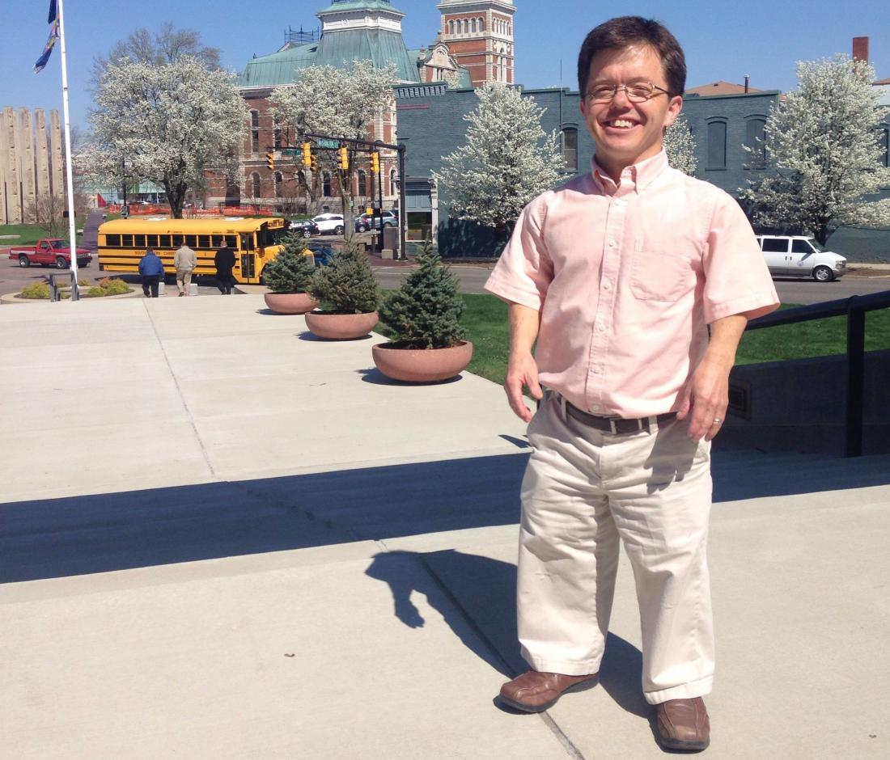

Dwarfism

Dwarfism is a condition characterized by short stature, with adult height typically 4 feet 10 inches (147 cm)
or less. Dwarfism can occur due to various genetic and medical conditions, and it can be divided into two
broad categories: disproportionate and proportionate dwarfism.
Key Points About Dwarfism:
Types of Dwarfism
- Achondroplasia: The most common type of dwarfism. People with achondroplasia have
an average-sized trunk with shorter limbs.
- Spondyloepiphyseal Dysplasia Congenita (SED): A rare type of dwarfism affecting the
spine and the growth of bones in the arms and legs.
- Diastrophic Dysplasia: A rare condition where people have shortened forearms and
calves, deformed hands, and a cleft palate.
Symptoms
- Short stature (typically 4 feet 10 inches or shorter in adulthood).
- Short limbs, especially in disproportionate dwarfism.
Normal intelligence but may have physical complications like joint pain, arthritis, or
spinal issues.
- In some cases, curved spine (lordosis or kyphosis), or bowed legs.
Diagnosis
- Ultrasound: Can detect certain types of dwarfism during pregnancy by observing
unusual limb or bone length.
- enetic Testing: Can identify gene mutations responsible for dwarfism.
- -rays: Used to look at bone development and structure.
- ormonal Testing: To check for growth hormone deficiency.
Treatment
- Hormone Therapy: Used in cases of growth hormone deficiency to help increase
height.
- Surgical Procedures: To correct bone deformities, such as bowing of the legs or
spinal issues.
- Physical Therapy: To improve mobility and muscle strength, particularly in the
joints.
- ssistive Devices: Like special furniture or mobility aids to improve daily living.
Management
- Regular Medical Care: Ongoing monitoring to manage complications, like orthopedic
issues or breathing difficulties.
- Occupational Therapy: Helps individuals adapt to daily activities, providing
strategies and tools to function more independently.
- Psychosocial Support: Addressing emotional and social challenges, as individuals
with dwarfism may face societal barriers or discrimination.
Prevention
Dwarfism, especially genetic forms like achondroplasia, cannot be prevented since they result from gene
mutations.
Counseling: For families with a history of dwarfism, genetic counseling may provide
insights into risks for future pregnancies.